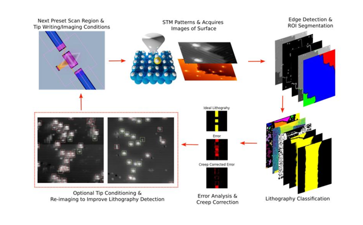
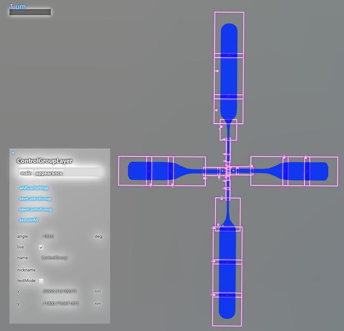
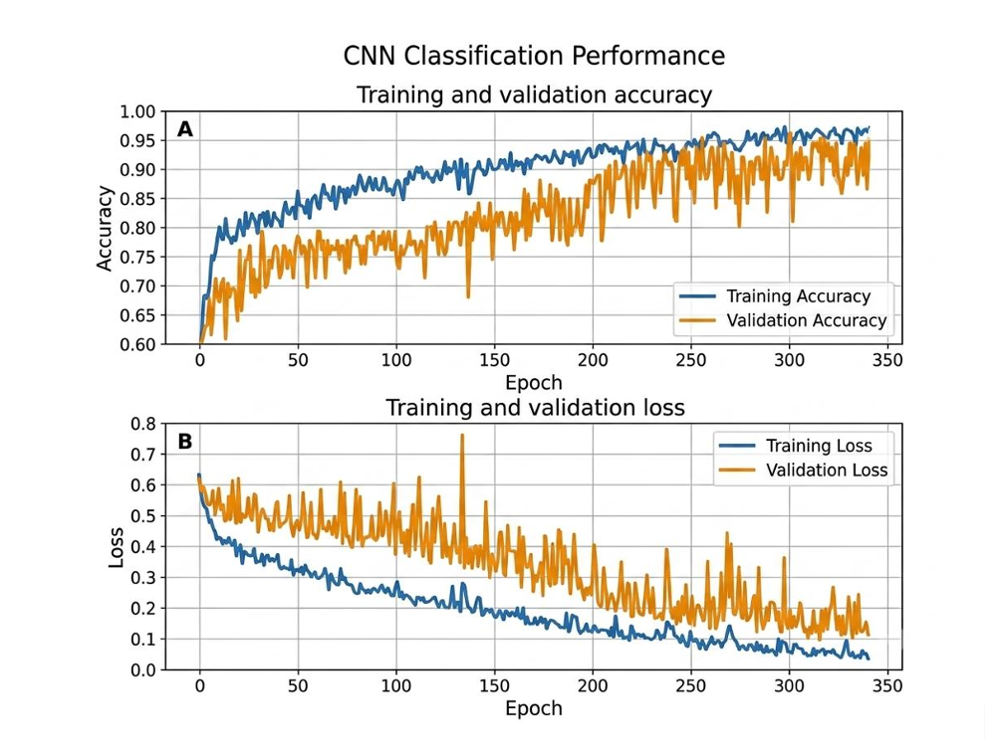
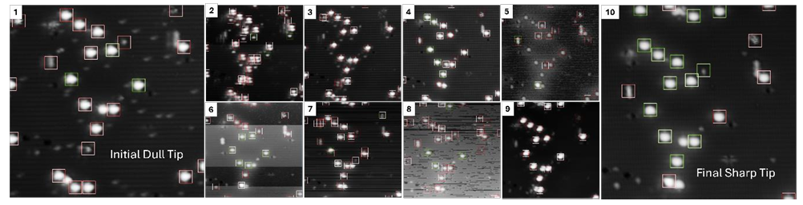
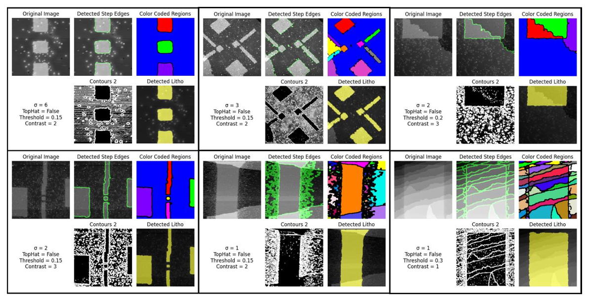
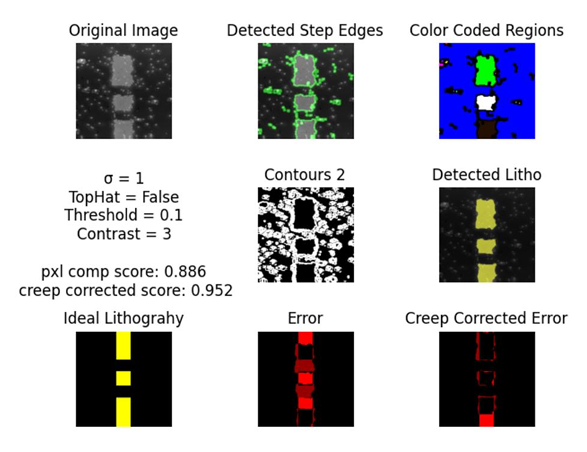
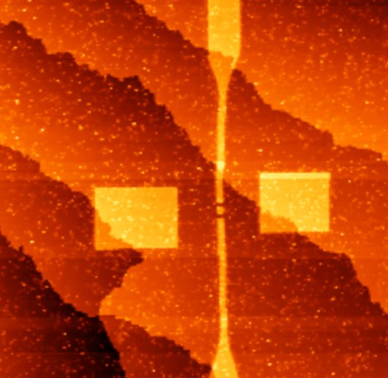
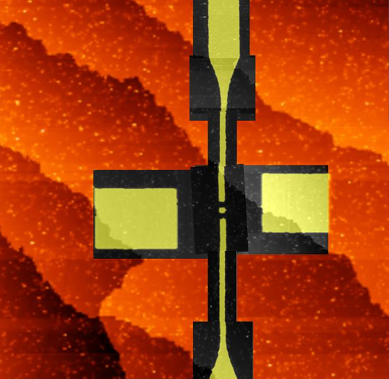

Automating Lithography for STM Based Donor Placement in Silicon
Open-Source Atom Based Device (ABD) Navigator Platform & Closed-Loop Automation
Overview & Motivation
Scanning tunneling microscope (STM) hydrogen de-passivation lithography (HDpL) provides an unparalleled solid-state platform for atomic-scale quantum computing and analog quantum simulation. By selectively removing hydrogen atoms from a passivated silicon surface in ultra-high vacuum (UHV) and dosing with precursor gases like phosphine, researchers can fabricate atomically precise donor devices such as single electron transistors (SETs).
However, manual operation limits throughput and reproducibility. To make HDpL accessible and scalable, we developed an open-source graphical user interface (GUI) platform and application programming interface (API)—termed the Atom Based Device (ABD) Navigator—to orchestrate remote STM operation, coordinate navigation, and execute automated closed-loop fabrication.

Figure 1: High-level overview of the closed-loop automation workflow: preset scan region definition, STM imaging, ROI segmentation, lithography classification, error analysis, tip creep correction, and automated tip conditioning.
ABD Navigator Software Platform
The ABD Navigator operates as a Google-maps-like interface where scanning probe images, optical references, and GDSII design layers are aligned and managed. Communicating via the ABD Controller API (interfacing with Scienta Omicron's Matrix controller), the software implements hierarchical control layers:
- Image Flattening & Leveling: Eliminates macroscopic sample tilt by applying first-order planar background subtraction and cumulative line-by-line median leveling to suppress horizontal line-stripe noise.
- Scan & Litho Raster Layers: Manages preset scan windows, pixel densities, tunneling current/bias, and tip writing speeds.
- Control Group Layer: Uploads GDSII layouts (such as complex SET geometries) and initiates the automated
executeAllprotocol.

Figure 2: User interface of the ABD Navigator showing multi-scale spatial coordinate mapping and GDSII design alignment.
Automated Tip Quality Classification & Conditioning
An atomically sharp tungsten tip is vital for resolving dangling bonds and patterning precise features. To eliminate operator-dependent tip evaluation, we trained a custom convolutional neural network (CNN) to classify positive-bias STM dangling-bond images as either "sharp" or "dull".
The sequential CNN processes \(38 \times 38\) pixel crops through two 2D convolutional layers (30 and 40 filters with \(5 \times 5\) kernels), a \(2 \times 2\) max-pooling layer, and 128 ReLU-activated hidden units, achieving training and validation accuracies exceeding 95%. If tip quality falls below user-defined thresholds, the system automatically relocates the tip to a designated conditioning area, executing controlled voltage bias approaches until a sharp atomic state is recovered.

Figure 3a: Training and validation accuracy and loss curves for the convolutional neural network tip classifier over 350 epochs.

Figure 3b: Sequential automated tip conditioning progression transforming an initial dull tip state into a final sharp atomic imaging state.
Automated Edge Detection & Roughness Segmentation
Differentiating between natural monatomic silicon step edges and depassivated lithographic boundaries presents significant challenges. Our platform utilizes a modified Canny edge detection pipeline combined with adaptive hysteresis thresholding and post-Sobel filtering to ensure edge continuity.
For scale-aware processing, a morphological White Top-Hat transform isolates dangling bonds from step edges. Terraces are segmented using 4-connected flood-fill operations, and a roughness density score (\(\mathcal{R}_k\)) evaluates the proportion of high-frequency edge pixels within each region to deterministically classify depassivated lithography.

Figure 4: Automated computer vision pipeline isolating monatomic silicon step edges and evaluating roughness density metrics.
Real-Time Error Analysis & Tip Creep Correction
Piezo-actuator drift and hysteresis can cause spatial misalignment between ideal GDS templates and experimentally written features. The software computes spatial centroid projections and bounding-box extremum matches to derive real-time displacement vectors \((\Delta x, \Delta y)\) for closed-loop drift compensation.
Parallelized parameter optimization algorithms evaluate multiple Gaussian blur, contrast, and roughness thresholds to maximize pattern fidelity, achieving pixel-by-pixel accuracies exceeding 95% when compared against ideal design templates.

Figure 5: Closed-loop displacement vector correction compensating for piezo-actuator drift and thermal hysteresis during lithography.
Automated SET Fabrication & Future Outlook
Using this integrated software pipeline, full single electron transistor (SET) devices—featuring inner structures with 10 nm lead widths and outer fan-out leads up to 400 nm—were automatically fabricated without human-in-the-loop intervention. Electrical measurements confirm zero degradation in device performance compared to manually written counterparts.
This open-source framework establishes a robust pathway toward industrial-scale nanofabrication, paving the way for future extensions into single-atom precision and large-scale analog quantum simulator (AQS) arrays.

Figure 6a: STM micrograph of successfully fabricated single electron transistor (SET) structures produced via fully automated lithography.

Figure 6b: Automated computer vision detections overlay verifying precise alignment and feature geometry.
Project Credits & Authorship
Authors: Mark-Yves Gaunin, Fan Fei, Connor Lin, Utsav, Brian Courts, Vijith Kamalon Pulikodan, Pradeep Namboodiri, Richard Silver, and Jonathan Wyrick.
Affiliations: National Institute of Standards and Technology (NIST) Physical Measurement Laboratory; Joint Quantum Institute (JQI) & Department of Electrical and Computer Engineering, University of Maryland (UMD).